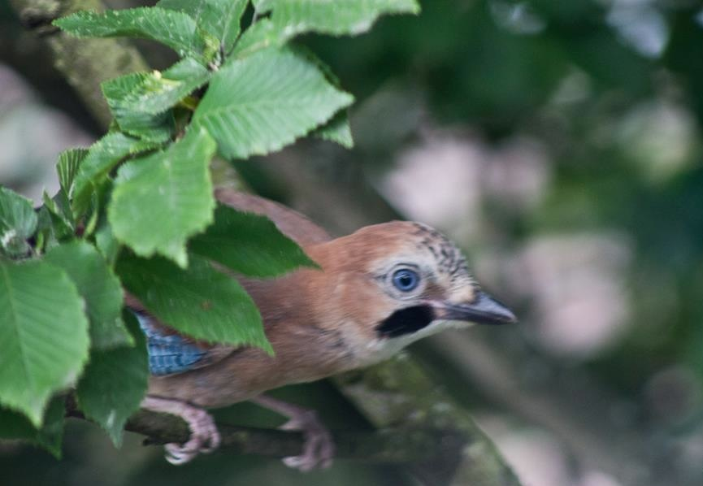

Natuur fotografie
Natuurfotografie is de tak van de fotografie die zich specialiseert in het fotograferen van de natuur. De fotografen zijn gespecialiseerd in het maken van foto's over fauna, landschappen, planten en close-ups van natuurlijke scénes en texturen. In natuurfotografie zijn er verschillende onderdelen, veel natuurfotografen specialiseren zich in een bepaald onderdeel. De meest beoefende zijn: landschapsfotografie, macrofotografie, onderwaterfotografie, wildlife- en vogelfotografie
 Er zijn ook specialisten die zich bezighouden met het fotograferen van dieren in beweging, vleermuizen, paddenstoelen, amfibieën etc. Slechts weinigen zijn op alle vlakken actief. Er zijn verschillende stromingen binnen de natuurfotografie die de inhoudelijke invulling overstijgen. Een groep wil zo accuraat mogelijk de werkelijkheid weergeven (registratieve fotografie), en ziet in natuurfotografie voornamelijk het illustratieve en wetenschappelijke belang. Anderen proberen zo veel mogelijk door middel van hun werk het grote publiek te overtuigen van de schoonheid van de natuur.
Veelal hebben natuurfotografen een achtergrond als natuurliefhebber en -beschermer en zijn lid van een natuurvereniging. Een kleinere groep zijn algemene fotografen die zich nadien hebben gespecialiseerd in natuurfotografie. Natuurfotografie kent momenteel een echte "boom", kwalitatief goede toestellen worden relatief goedkoop en de interesse in natuur is groot. De overkoepelende organisatie in Nederland is het Natuurfotografen Verbond Nederland
Natuurfotografie wordt vaak onderschat. Deze vorm van fotografie vereist veel geduld en afzien bij zowel koude als warme temperaturen, veel lichamelijke inzet, voorbereiding, technische kennis van materiaal en randapparatuur (computerkennis, geologie en ecologie, gps en navigatie, cartografie, literatuur en biologie) en ook veel investering in materiaal. De opbrengsten zijn echter beperkt en het aanbod is wereldwijd groot en de afzetmarkt klein. De meeste fotografen zijn dan ook fanatieke amateurs die er veel voor over hebben.